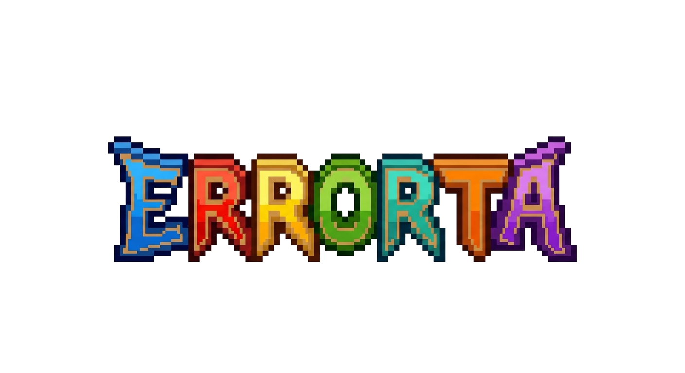

PM-guided teams
Plan, build, review, test.
A project manager agent decomposes your goal into a task backlog, assigns each task to the right role, re-plans as work lands or stalls, and holds the merge gate. You watch it work and steer at any point.

The local-first AI harness that ships software.
Assemble a team of coding agents - CLI subscriptions, local models,
and API models - led by a PM, working in rooms on your machine to
plan, build, review, and test. Built in tandem with the open-source
 AIAR
framework for grounded answers.
AIAR
framework for grounded answers.
In development Alpha dropping soon.
Give Errorta a goal. A PM agent breaks it into tasks, assigns each one to a developer, reviewer, or tester, and drives the work through branches, pull requests, review, and real test runs - the way a small engineering team actually ships.
Plan, build, review, test.
A project manager agent decomposes your goal into a task backlog, assigns each task to the right role, re-plans as work lands or stalls, and holds the merge gate. You watch it work and steer at any point.
Cheapest capable model per task.
Mix Claude, Codex, and Cursor CLI subscriptions, local models on Ollama, and Anthropic / OpenAI / Google APIs in one team. The PM picks the smallest model that can do each task and escalates to a stronger one only when it has to.
Configurable, inspectable, local.
Every agent works inside a room you configure - which models, what each one is allowed to see, how the work flows. Nothing leaves your machine unless you route it to a model that does.
Plug in the models you already have:
Not every question is a coding task. Convene a Council - several models deliberating in a shared room across topologies you choose (parallel answers, round-robin, debate, moderator-led, blind review). Each member sees only what its policy allows, a finalizer or judge resolves the room, and every context hand-off is inspectable down to the byte. It is a second opinion engine that runs entirely on your terms.
Errorta is built in tandem with
 AIAR,
the open-source local-RAG framework that provides retrieval,
LLM-as-judge evaluation, and a grounding / correction loop. Point your
agents and Council at your own corpus and they answer from your data -
with citations, a structured verdict on whether the answer holds up,
and corrections that carry forward. Local AI that admits when it is
wrong and remembers what you fixed.
AIAR,
the open-source local-RAG framework that provides retrieval,
LLM-as-judge evaluation, and a grounding / correction loop. Point your
agents and Council at your own corpus and they answer from your data -
with citations, a structured verdict on whether the answer holds up,
and corrections that carry forward. Local AI that admits when it is
wrong and remembers what you fixed.
Errorta is in active development. There is no public installer yet - leave your email to be notified when the alpha lands and to join the testers list.
Prefer email? Write to help@errorta.app.